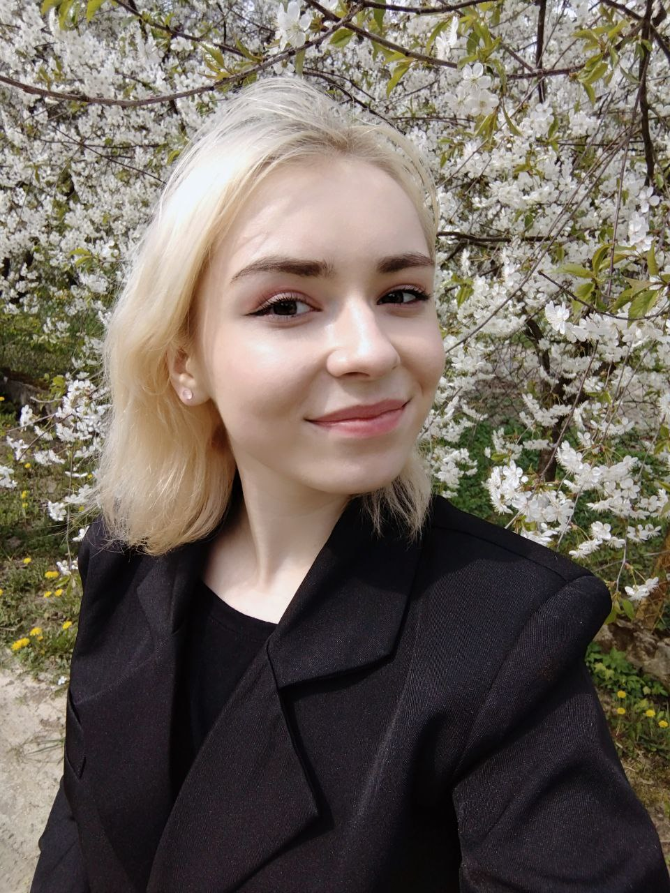

Как бессонница в час ночной Меняет, нелюдимая, облик твой Чьих невольница ты идей? Зачем тебе охотиться на людей?.
С тобой я чувствую, что могу всё. Ты — мой самый близкий человек, и я ценю каждое мгновение, проведённое с тобой. Спасибо за твою доброту, терпение и любовь. Ты — самое дорогое, что у меня есть. Я люблю тебя больше слов, и я всегда буду благодарен за то, что ты есть в моей жизни.
Ты — мой тихий уголок в этом шумном мире. Спасибо за твою поддержку, за твою веру в меня. Ты делаешь меня лучше, и я бесконечно благодарен за это. Я люблю тебя
Каждый день с тобой — это подарок. Ты даришь мне тепло, когда мир кажется холодным. Ты вдохновляешь меня, когда я теряю веру. Ты — моя опора, моя любовь, моя жизнь. Спасибо за то, что ты есть.
